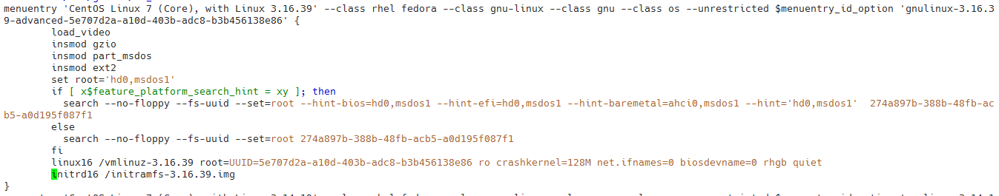

内核编译 #
概念 #
内核指的是一个提供硬件抽象层、磁盘及文件系统控制、多任务等功能的系统软件。
一般保存在/boot目录中，格式为/boot/vmlinuz-XXX
为什么要编译内核 #
-
需要新功能支持
-
原核心过于臃肿
-
与硬件搭配的稳定性
-
其他特殊需求
编译内核 #
-
下载源码包， https://www.kernel.org/
-
解压内核包，一般放在/usr/src/kernels目录下
tar -Jxf /root/linux-3.16.39.tar.xz -C /usr/src/kernels/ -
进入内核目录
cd /usr/src/kernels/linux-3.16.39 -
查看内核目录( 目录说明)
ls -d ./*/ ./arch/ ./crypto/ ./drivers/ ./fs/ ./init/ ./kernel/ ./mm/ ./samples/ ./security/ ./tools/ ./virt/ ./block/ ./Documentation/ ./firmware/ ./include/ ./ipc/ ./lib/ ./net/ ./scripts/ ./sound/ ./usr/ -
清空源代码的其他信息
下载下来的源码包一般情况下不确定是否已经编译过，或者还残留有生成的一起文件，为了编译时不会出现未知的错误，进行清理。
make mrproper -
核心功能挑选(生成.config文件)( 选择界面说明)
yum install ncurses-devel -y make menuconfig -
生成bzImage内核 arch/x86/boot/bzImage
make -j 4 clean make -j 4 bzImage ll arch/x86/boot/bzImage -
编译安装模块
make -j 4 modules make modules_install -
手动添加内核
#拷贝内核文件到/boot目录底下 cp arch/x86/boot/bzImage /boot/vmlinuz-`basename /lib/modules/3.16.39/` #备份.config文件 cp .config /boot/config-`basename /lib/modules/3.16.39/` #添加可执行权限 chmod a+x /boot/vmlinuz-3.16.39 #拷贝系统内核映射文件 cp System.map /boot/System.map-`basename /lib/modules/3.16.39/` #拷贝内核模块列表 gzip -c Module.symvers > /boot/symvers-`basename /lib/modules/3.16.39/`.gz -
配置grub
#生成对应版本的initramfs文件 dracut -v /boot/initramfs-`basename /lib/modules/3.16.39/` 3.16.39 #更新grub.cfg配置，加入新内核记录 grub2-mkconfig -o /boot/grub2/grub.cfg -
查看grub配置/boot/grub2/grub.conf

-
重启机器，选择新内核启动
目录说明
-
arch：与硬件平台有关的项目，大部分指的是CPU的类型，例如x86,x86_64,Xen虚拟支持等。
-
block：与成组设备较相关的设定数据，区块数据通常指一些大量存储媒体，还包括类似ext3等文件系统的支持是否允许等。
-
crypto：核心所支持的加密技术，如md5、des、sha512等。
-
Documentation：与核心有关的一堆说明文件，其中包括了对上面所有目录里的说明。
-
firmware：一些旧式硬件的微脚步数据。
-
fs：内核所支持的filesystems（文件系统），例如ext系列、ntfs、reisefs等。
-
include：一些可让其它过程调用的标头(header)定义数据。
-
init：一些初始化的定义功能，包括挂载和init 程序的呼叫等。
-
ipc：定义Linux操作系统内各程序进程间的通信。
-
kernel：定义核心的程序、核心状态、线程、程序的排程(schedule)、程序的讯号(signle)等。
-
lib：一些函数库。
-
mm：与内存单元有关的各项数据，包括swap与虚拟内存等。
-
net：与网络有关的各项协议数据，还有防火墙模块(net/ipv4/netfilter/*) 等。
-
security：包括selinux等在内的安全性设定。
-
sound：与音效有关的各项模块。
-
virt：与虚拟化机器有关的信息，目前核心支持的是KVM( Kernel base Vitual Machine )。
选择界面说明
-
make help： 支持“更新模式进行配置”。
-
make menuconfig： 基于curses的文本窗口界面
-
make gconfig： 基于GTK(GOME)环境窗口界面
-
make xconfig： 基于QT(KDE) 环境的窗口界面
-
make config： 老旧的命令行遍历方式逐一配置每个可配置的选项
-
make oldconfig： 透过已经存在的./.config文件内容，并使用该文件内设定值为默认值，只将新版本核心的新功能列出让用户选择，可以简化核心功能挑选过程。对与升级内核很好选择。
-
make defconfig： 基于内核为目标平台执行提供的“默认”配置进行配置
-
make allyesconfig： 所有选项均回答为”yes”
-
make allnoconfig： 所有选项均回答为”no”